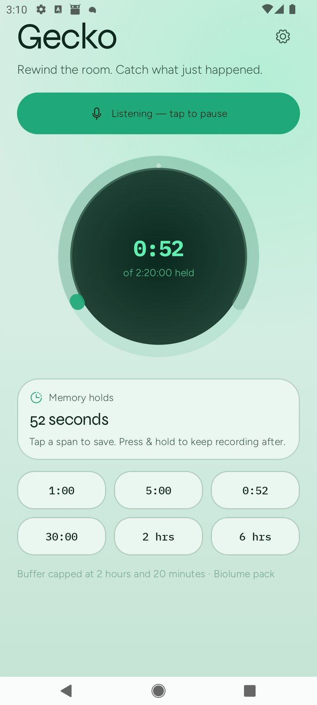
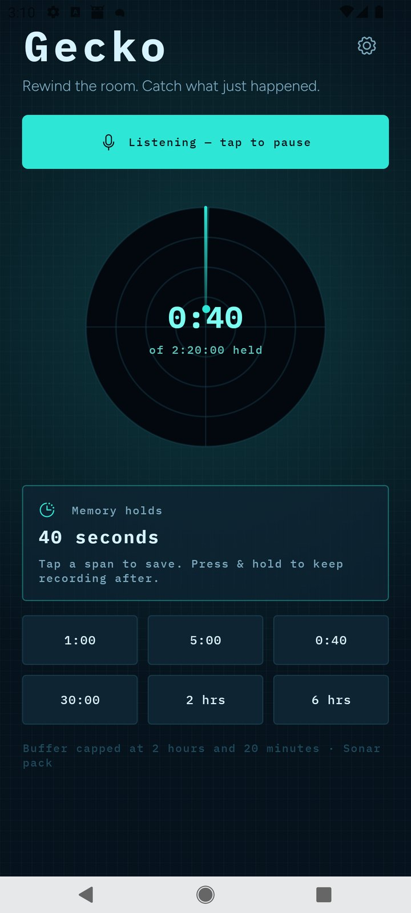
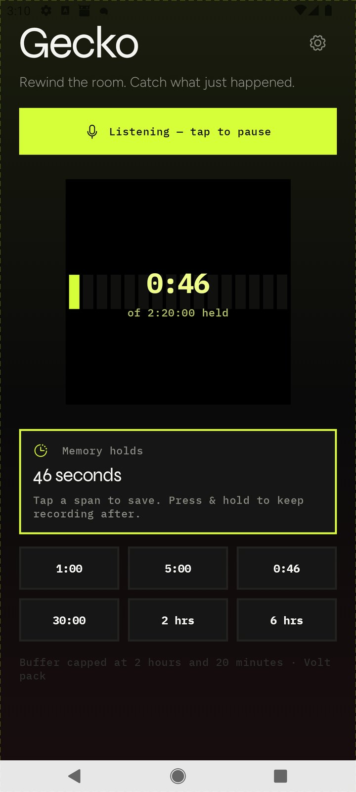
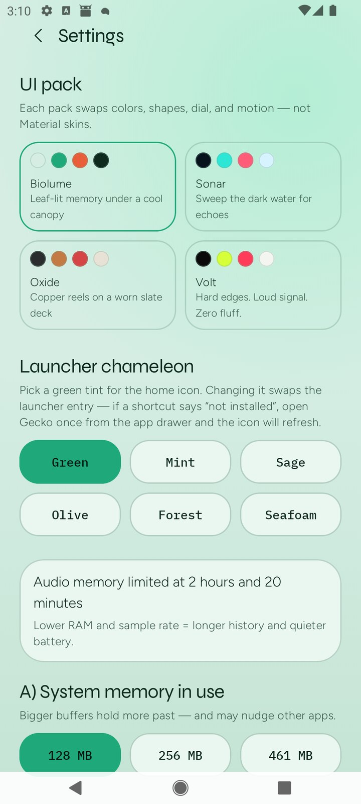

Gecko
Rewind the room.
Catch what just happened. A rolling mic buffer on Android — save the past, then keep recording forward.

Save the past. Keep going.
Gecko listens into RAM. When something worth keeping just happened, tap a span — or press and hold to export history and keep recording.
-
Buffer
Rolling mic memory
Continuous foreground capture into a ring buffer — up to hours, sized by your RAM budget.
-
Save
Tap or hold
Export the last 1 / 5 / 30 minutes, 2 / 6 hours, a custom span, or everything held. Hold to keep listening after.
-
Private
On-device only
No ads, no analytics, no uploads. WAV files land in Music/Gecko via MediaStore.
Four skins. Zero Material chrome.
Each UI pack rewires color, dial, surface, type, and motion — not a theme toggle on the same buttons.



Get Gecko
Same package on both channels. F-Droid for updates; GitHub for the newest signed build.